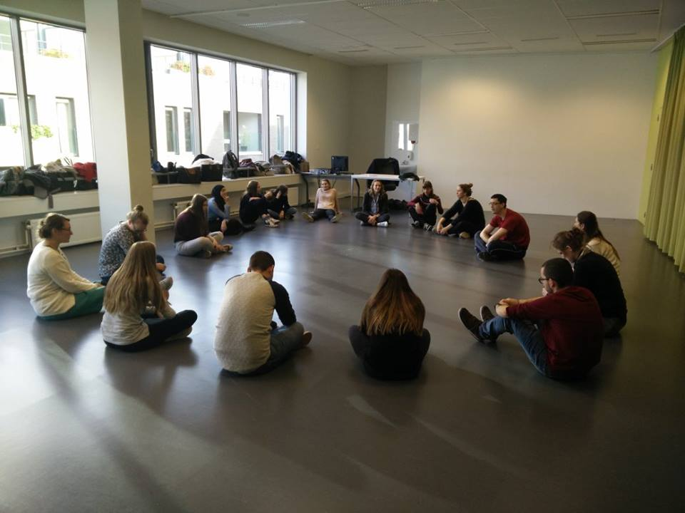
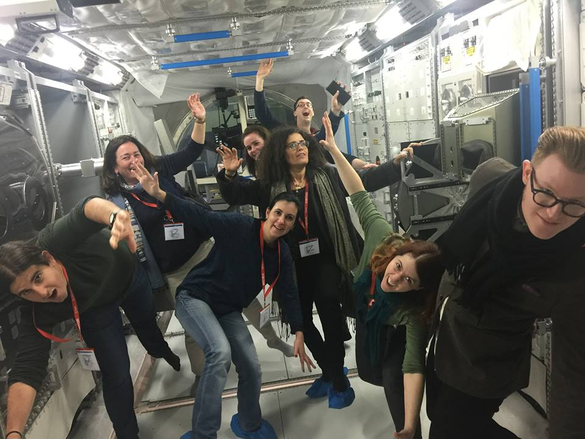
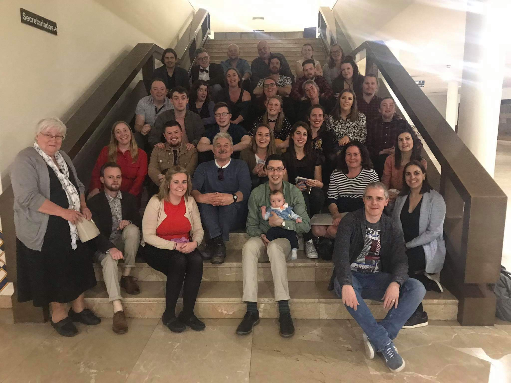

About the Process
The process of the SPACE project took place from September 2016 - August 2019, and involved partnership meetings, intensive programmes and project work.
After the initial planning meeting in Dundalk, Ireland, the project was launched in Antwerp at the International STEAM week hosted by AP Hogeschule in November 2016. This was the site of the first Intensive Programme - all partners attended and students from Ireland, Norway and Belgium came together for the first time creating the SPACE student network. Lecturers led skills sharing workshops and techniques for steam education to prepare the students to deliver their own STEAM workshops. The student team then prepared in teams and visited a local school in Lier to deliver workshops to the pupils.

In 2017 the SPACE Partners met in Nordwijk, Holland at the European Space and Technology Centre (ESTEC). In between intense planning sessions, we were treated to a tour of ESTEC by Bernard Foing, Director of the International Lunar Exploration Working Group. Bernard told us all about the plans for a Moon Village which was the topic of The Global Science Opera in 2017. We rounded off the day with dinner and an opportunity for Bernard to play his viola!
The second Intensive Programme took place in Lervick in Norway in February 2018 hosted by the Western Norway University of Applied Sciences. Again students from Belgium, Norway and Ireland came together to develop and share ideas. This was a crucial week in the project and we used it to develop ideas around the SPACE APP, the STEAM recipe repository, and to cement the SPACE student network. The weather was beautiful and our Norwegian hosts provided a range of inspirational experiences including a STEAM themed afternoon on the shore of the Fjord trying out smelting and hearing local myths!

Our Partnership Meeting in Porto, Portugal in March 2018 looked forward to our final Intensive programme which would culminate in a conference showcasing the resources created. We also reviewed the Norway week and assessed what needed to be worked on over the final 18 months of the project.

In March 2019 the team returned to Porto, Portugal for the Third Intensive Programme. The SPACE student network came together for the final time for a busy week. They explored solar eclipses with NUCLIO, visited the Porto Planetarium, did workshops with Casa da Musica, and prepared and delivered STEAM workshops for three local schools. At the end of the week they whole SPACE team prepared presentations for the final Conference -
The Partnership met for a final time in May 2019 Dundalk, Ireland to review the Porto week and look at the final actions for the project.
